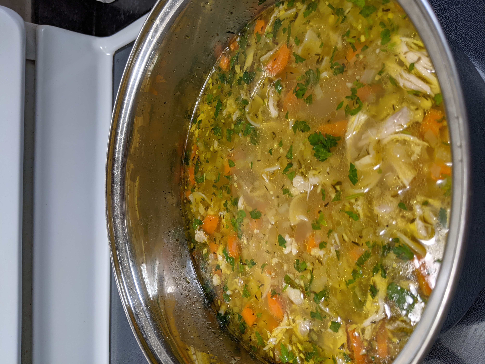

Chicken Noodle Soup

Description
Another of Mya's favourites, I first made this for
Mya when she was sick. It was quickly devoured and
has become an often requested supper - healthy or
sick!
Ingredients
- 1/2 Tablespoon butter
- 2 ribs celery , diced
- 3 large carrots diced
- 1 yellow onion
- 2 cloves garlic , minced
- 8 cups chicken broth
- 1 teaspoon salt , to taste
- ½ teaspoon freshly ground black pepper
- 1/4 teaspoon italian seasoning
- 3 cups dry egg noodles
- 3 cups rotisserie chicken
- 1 teaspoon better than bouillon chicken flavor(or to
taste)
- Optional: 3/4 cup whole milk
Steps
Step 1
- Add drippings from rotisserie chicken to a large
pot along with a litle bit of olive oil over
medium heat. Add in carrots, celery, and onion.
Cook for about 10 minutes.
Step 2
- Add in chicken stock, chicken bouillon,
rotisserie chicken, and spices. Bring to a boil.
Step 3
- Mix in egg noodles and cook until al dente.
Add in milk, if desired.